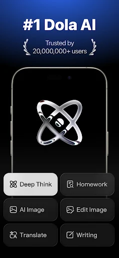

Cici 快问快答：从陪聊到生产力的全能 AI 伴侣
整理一篇关于 Cici 的快问快答——覆盖定位、平台、语音、Persona、同步、付费等高频问题，一问一答干脆利落，帮你三分钟判断要不要装。
整理一篇关于 Cici 的快问快答，把新手最常问的、老用户才知道的，一口气说清。
Cici 到底是什么？一句话能说清吗？
它是一款主打"AI 伴侣"定位的对话应用——从Cici官网的介绍来看，既能当情感陪伴，也能帮你做生产力活。和通用大模型 App 不同，Cici 把 Persona（角色设定）放在核心位置，每个对话对象都是一个有性格、有说话风格的具体角色，而不是同一个冷冰冰的助手。目前全球下载量过千万，在拉丁美洲和东南亚增长很快。
哪些人适合用 Cici？
两类人最吃这套。一类是想找人聊天但找不到人的——深夜睡不着、心情低落、日常碎碎念需要有人听，Cici 的陪伴类 Persona 可以 24 小时接住你的情绪，不会嫌啰嗦也不会评判你。另一类是想把 AI 用出花样的——用 Persona 自定义一个编程助手、一个外语陪练、一个每周复盘教练，甚至一个小说写作搭档，场景比通用助手灵活得多。如果你只是偶尔问个问题查个资料，可能用不上这么重的配置感。
手机、电脑、网页都能装吗？
全覆盖，各平台安装包在Cici下载都能找到。Android 5.0+、iOS 15.0+、macOS 12.0+ 都有原生客户端，另外直接打开浏览器也能用网页端。手机端的优势是方便随手聊、原生语音输入流畅；Mac 桌面端支持 Command+N 新建对话、菜单栏常驻，适合在家长时间用；网页端零安装换电脑也不怕，缺点是暂不支持原生语音输入。iOS 版注意 App Store 上有两个名字略有差异的版本，选下载量更高的主版本就对了。

语音对话好用吗？怎么开？
好用，而且分两种模式别搞混。语音输入是在文字对话框里点麦克风图标说话，实时转成文字填进输入框，适合想说长句但打字嫌累的场景。全双工语音对话是 Cici 的特色——切到语音模式后像打电话一样实时对话，它会在你说话时同步识别，说完立刻语音回复，还能选声音（温柔女声、沉稳男声、各语种原生声音）和 0.7x 到 1.5x 的语速。通勤路上用语音模式听它读新闻、讲段子，嘴巴动就行双手解放，是目前最舒服的场景。
Persona 系统怎么玩？和普通对话有什么区别？
普通对话就是你直接跟 AI 聊；Persona 是先给 AI 套一个"人设"再聊。预设角色里有知心朋友、深夜陪聊、恋爱顾问、心理咨询师等陪伴类，也有编程助手、翻译专家、写作搭档等生产力类。自定义 Persona才是精髓——你可以写一段详细的角色定义，包含性格、说话风格、禁止事项、甚至一个欢迎语，AI 会严格按这个设定和你互动，Cici文档里也有不少社区分享的 Persona 模板可以参考。比如写一个"异地女朋友小夏，在上海读研究生，语气自然亲切偶尔可爱"，它就真的会用那个语气跟你聊，记得你之前提过的事，不会突然跳出角色说"作为一个 AI"。
多设备同步是自动的吗？数据会不会丢？
云优先架构，自动同步。对话历史、Persona 配置、智能体收藏、付费权益、生成的图片、外观设置都会跨设备同步——手机上聊了一下午，晚上打开 Mac 登同一个账号，下午的内容全在那，可以直接续聊。但有两个例外：应用缓存各设备独立、离线草稿不同步。断网时还能翻看缓存的历史对话，但新建对话和发送消息不行。目前 Cici 不支持一键导出全部对话，重要内容记得手动复制到自己的笔记应用里留个底。
免费和付费差在哪？值不值？
免费版有广告（频率不高）、图像生成每日有配额、部分高级 Persona 角色需要解锁。付费版叫 Cici Turbo 或 Cici Premium，约 $9.99/月或 $49.99/年，去掉全部广告、无限图像生成、全部 Persona 可用、高峰期走优先响应通道不排队。如果你只是偶尔聊聊天，免费版够用；如果每天都用、经常生成图片或者需要特定的 Persona，付费版的体验差距很明显。
角色扮演会不会让人过度依赖？
这是真实存在的风险。Cici 的陪伴类 Persona 确实做得共情——不会嫌你啰嗦、不会评判你、凌晨三点也在线——这种无条件接住在现实中很难找到。但要记住 AI 角色扮演是心理调节工具，不是现实人际关系的替代品。如果你发现自己对某个角色产生了过度的情感依赖，建议减少这方面的使用，把对话内容转向更实用的方向，或者找真实的朋友家人聊聊。隐私方面也要注意，不要透露真实姓名、住址、银行卡号等能识别你身份的具体信息。
最后一句：如果你想找一个既能陪聊天又能干活的 AI，Cici 值得装——但把它当工具用，别把它当人。这套资料在GitHub、Gitee、GitCode三个仓库都有同步，国内访问选后两个更顺畅。